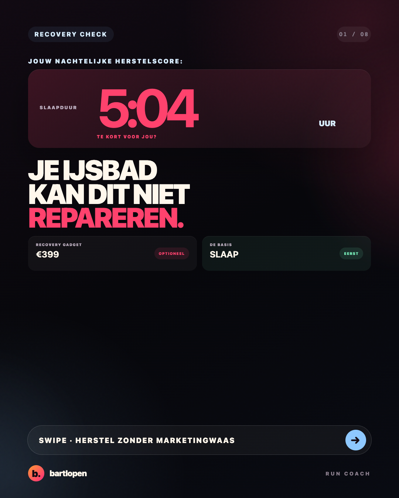
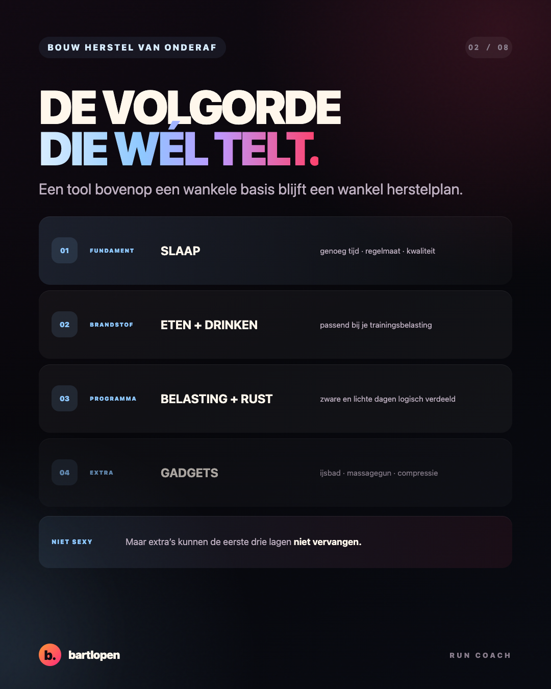
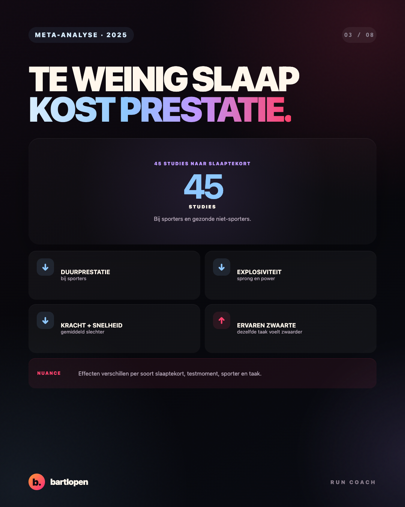
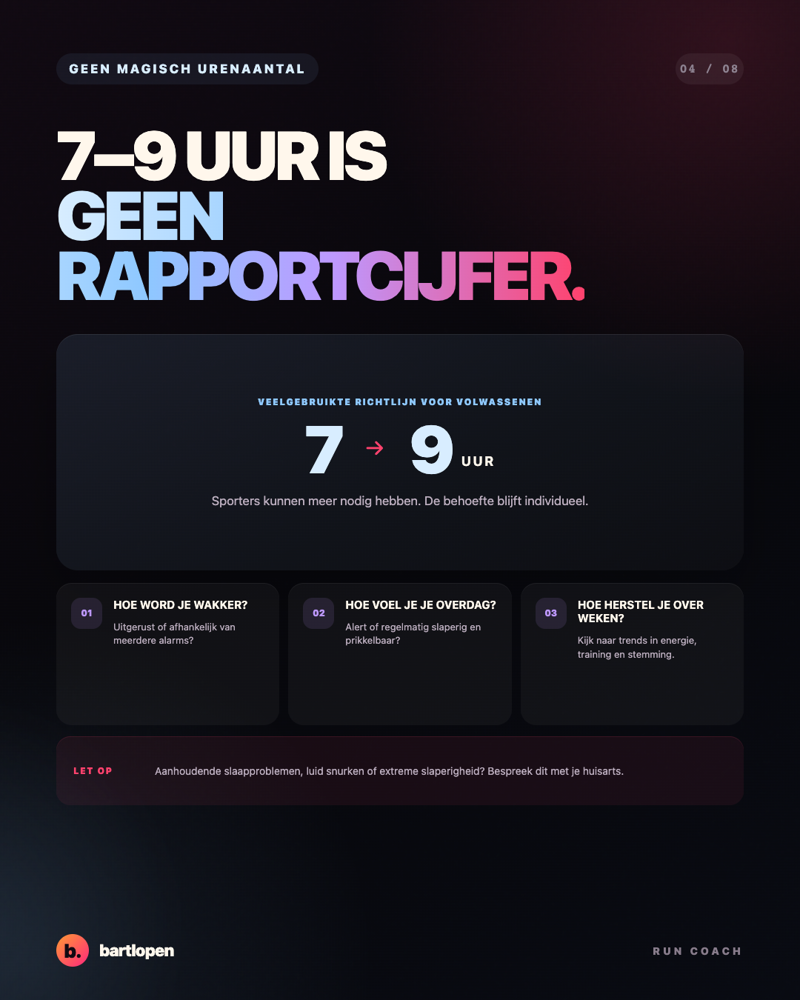
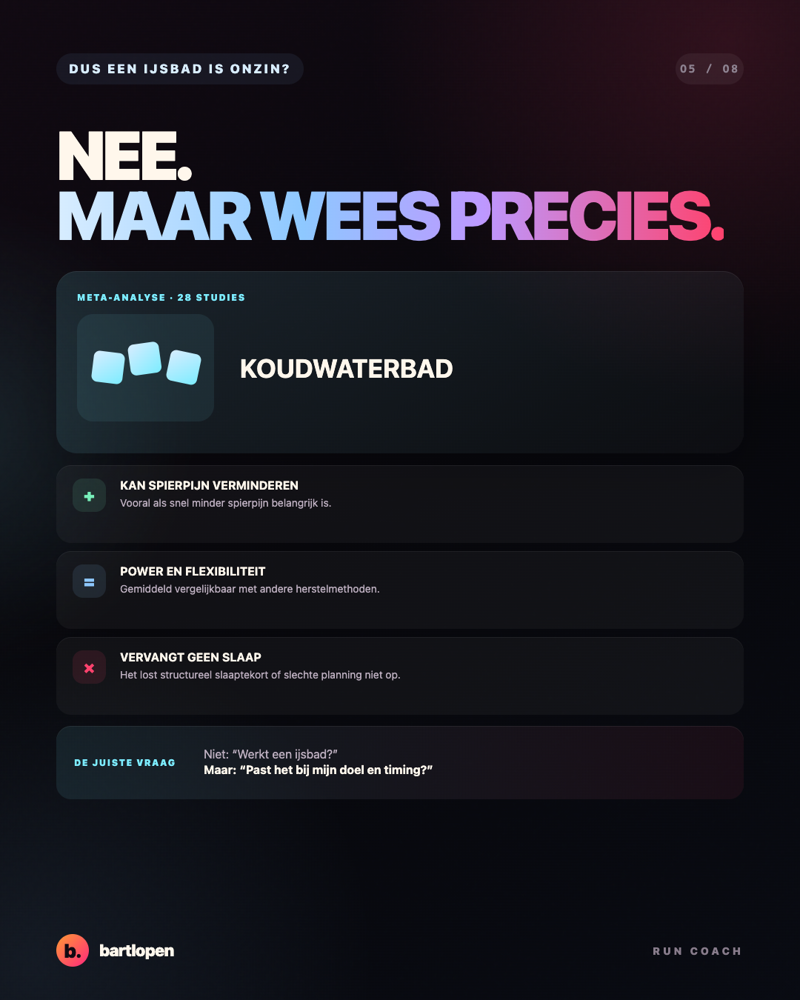
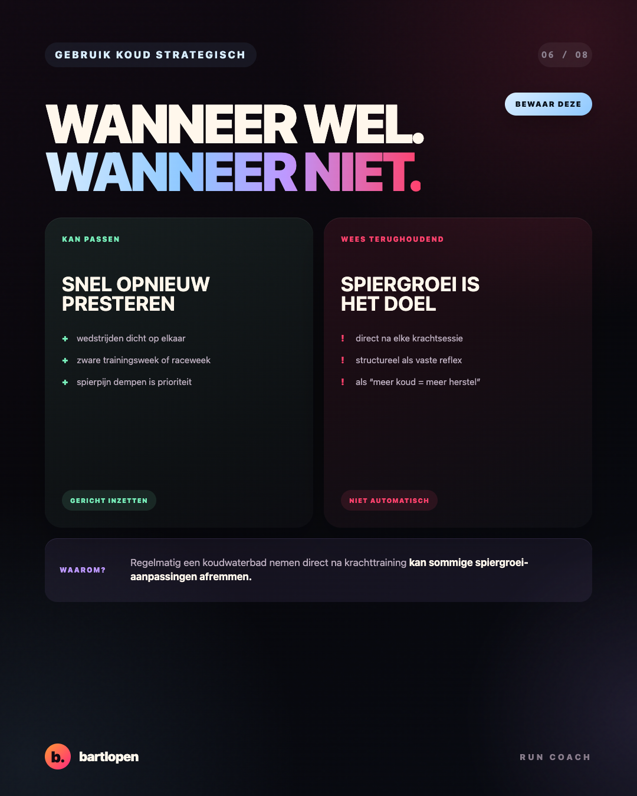
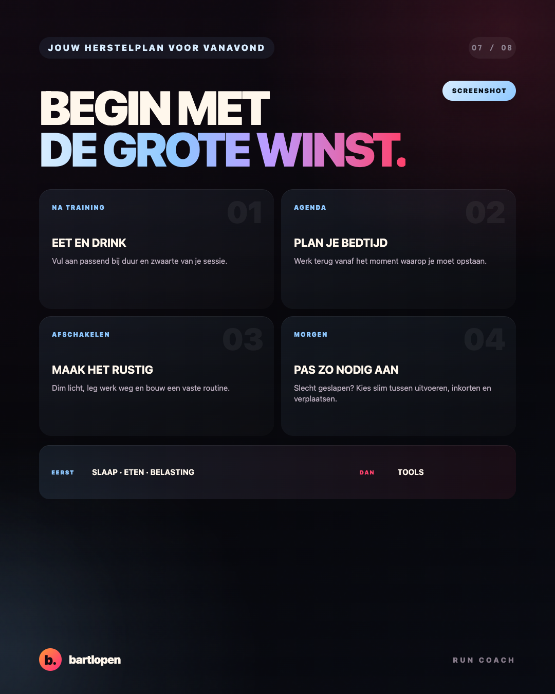
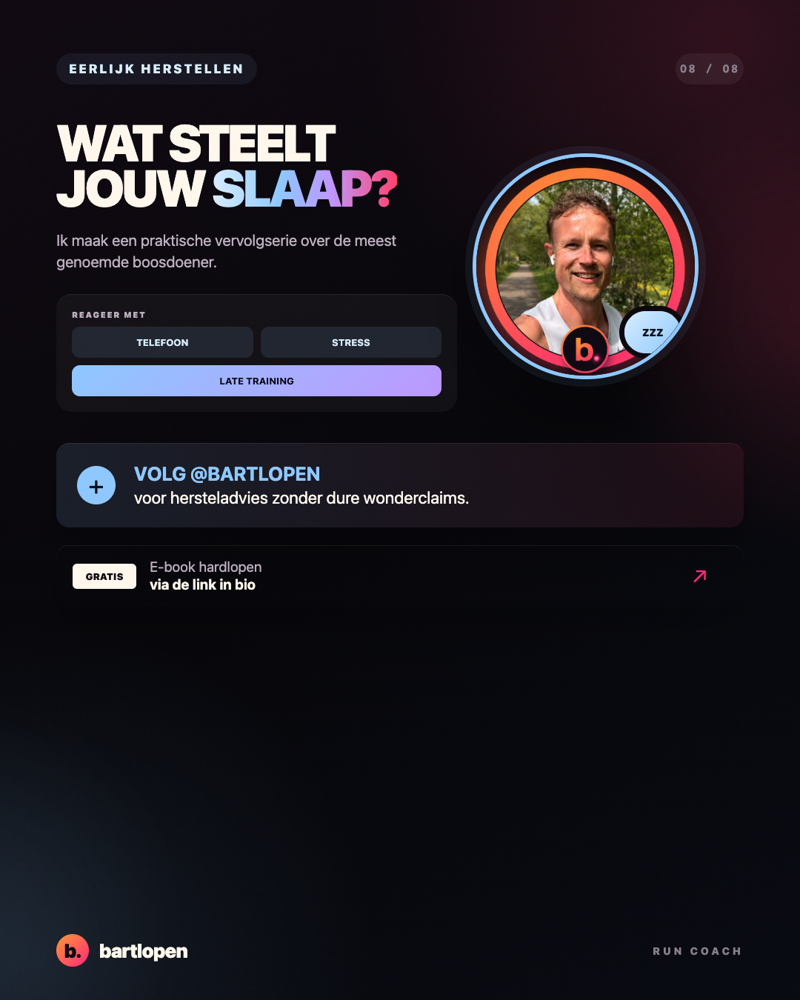

SLIDE 01 ↗Slaap versus
herstelgadgets
Acht premium slides over slaaptekort, koudwaterbaden en de juiste herstelvolgorde. Gebouwd in 4:5-formaat voor Instagram en TikTok Photo Mode.

SLIDE 02 ↗
SLIDE 03 ↗
SLIDE 04 ↗
SLIDE 05 ↗
SLIDE 06 ↗
SLIDE 07 ↗
SLIDE 08 ↗Caption
5 UUR SLAAP + EEN IJSBAD = NOG STEEDS 5 UUR SLAAP. 🥶 Hersteltools kunnen nuttig zijn. Maar ze zijn de extra laag — niet de basis. Begin bij: 😴 voldoende en regelmatige slaap 🍝 eten en drinken passend bij je training 📅 een logische verdeling van belasting en rust 🧊 pas daarna: ijsbad, massagegun of compressie Een koudwaterbad kan spierpijn verminderen en je een frisser gevoel geven. Maar gebruik je het direct na iedere krachtsessie, dan kan het sommige spiergroei-aanpassingen afremmen. Gebruik tools dus gericht. Niet omdat je horloge, TikTok of een advertentie zegt dat je ze nodig hebt. Wat steelt jouw slaap het vaakst: telefoon, stress of laat trainen? 👇 #herstel #slaap #ijsbad #hardlopen #krachttraining #hybridtraining #bartlopen
Bronnen: meta-analyse over slaaptekort en sportprestatie (2025), expertconsensus over slaap bij sporters, meta-analyse van koudwaterbaden (2023) en review over koudwaterbaden en trainingsadaptatie.